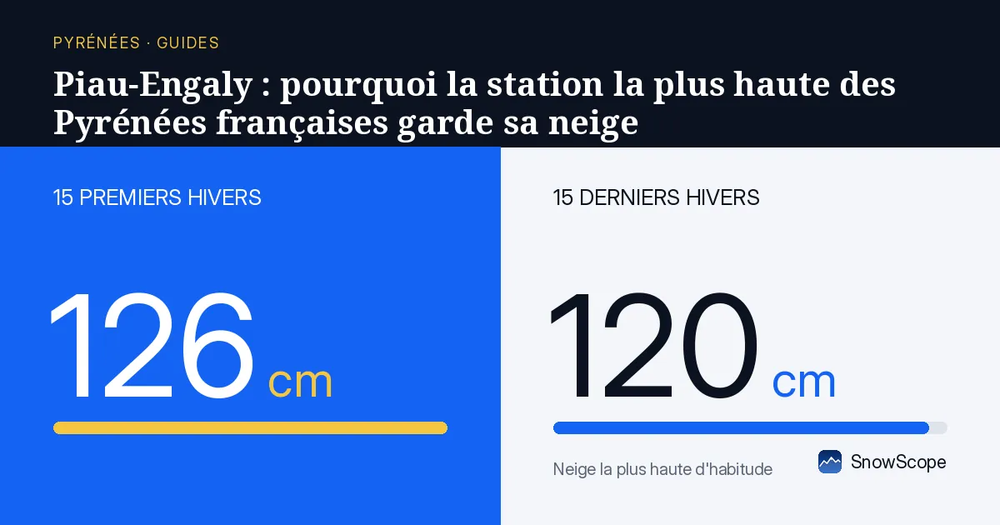

Piau-Engaly : pourquoi la station la plus haute des Pyrénées françaises garde sa neige
Piau-Engaly est petit et haut : 32 km de pistes balisées sur 8 remontées, mais la base se trouve déjà à 1 762 m et le sommet à 2 527 m, dans le massif de la Néouvielle à la tête de la vallée d'Aure. Cette altitude est rare du côté français des Pyrénées, et elle explique pourquoi la station reste souvent blanche quand les voisins plus bas deviennent minces.
Consultez les prévisions neige en temps réel pour Piau-Engaly sur l'application SnowScopeHauteurs de neige, alertes poudreuse et carte 3D, gratuitement.

Comment l'altitude protège Piau-Engaly
Le village lui-même se situe à l'altitude de base. Cela a de l'importance car cela signifie que vous skiez dans et hors de la neige profonde la plupart des hivers, pas vers elle. Sur 46 hivers passés, la profondeur habituelle au sommet en bas était de 88 cm, allant de 34 cm dans l'hiver le plus sec à 159 cm dans l'hiver le plus riche. Par contraste, les stations pyrénéennes plus basses dans les mêmes vallées perdent leur neige de base des semaines plus tôt chaque printemps.
À mi-pente (2 144 m) le sommet habituel était de 123 cm, et au sommet (2 527 m) il atteignait 159 cm. La différence d'altitude ajoute 70 cm de neige entre la base et le sommet, un tampon qui maintient le terrain ouvert longtemps au printemps.
Quand arrivent les tempêtes atlantiques
Les Pyrénées se réveillent tard : la neige arrive des tempêtes atlantiques qui se construisent en décembre, pas en novembre comme les Alpes. La première neige habituelle à mi-pente s'installe d'ici le 3 novembre dans la moitié des hivers, mais novembre lui-même ne laisse que 5 cm. Décembre apporte 30 cm à mi-pente et 39 cm au sommet, bien qu'un décembre sec ne retienne que 4 cm.
La véritable saison de la neige commence en janvier. Mi-pente voit 63 cm en janvier habituel, 90 cm en février et 83 cm en mars. Au sommet ces mois s'écoulent 83 cm, 119 cm et 111 cm. Février est le mois le plus profond à toutes les altitudes.
Quelle semaine offre la meilleure neige
La semaine ISO 7, à mi-février, est la semaine la plus fiable à mi-pente avec une profondeur habituelle de 86 cm et de la neige au-dessus de 50 cm dans 83 pour cent des hivers passés. C'est quand les tempêtes atlantiques ont fait leur travail mais la fonte printanière n'a pas encore prise. La moitié de tous les hivers passés a conservé 50 cm ou plus à mi-pente pendant 14 semaines, la plupart en janvier, février et mars.
Fin février ou mars est la stratégie de réservation la plus simple pour avoir une forte probabilité de neige profonde sur toute la station.
L'oscillation pyrénéenne : hivers secs et riches
La neige pyrénéenne oscille plus d'un hiver à l'autre que la neige alpine. À mi-pente le sommet habituel de 123 cm masque un hiver pauvre qui s'est arrêté à 44 cm et un riche qui a atteint 206 cm. L'hiver passé (2025–26) a atteint un sommet de 145 cm. Au sommet l'éventail allait de 53 cm à 270 cm autour d'un habituel 159 cm.
Cet écart est la nature de la météo atlantique. Une seule tempête majeure peut élever un hiver pauvre vers la moyenne ; son absence peut rendre un hiver sec. La neige reste au sol à mi-pente pendant 168 jours en hiver habituel, donc même dans une année mince la profondeur se rétablit avec chaque nouvelle chute.
Neige mois par mois à trois altitudes
Décembre : 21 cm en bas, 30 cm à mi-pente, 39 cm au sommet. Janvier : 44 cm en bas, 63 cm à mi-pente, 83 cm au sommet. Février : 61 cm en bas, 90 cm à mi-pente, 119 cm au sommet.
Mars : 54 cm en bas, 83 cm à mi-pente, 111 cm au sommet. Avril : 29 cm en bas, 46 cm à mi-pente, 62 cm au sommet. Ce sont les profondeurs typiques sur 46 hivers passés, pas des mesures de la station ; elles montrent ce qui tombe habituellement, pas ce que les dameurs ajoutent.
La vue d'ensemble : l'altitude tenant bon
Sur 46 hivers passés la profondeur habituelle au sommet a à peine changé : 157 cm dans les 15 premiers hivers et 158 cm dans les 15 derniers. Les jours avec neige au sol à mi-pente ont baissé de 180 à 160 sur la même période. L'altitude fait son travail, gardant la neige quand le terrain plus bas ne peut pas.
Conseils aux skieurs
- Réservez février ou mars pour la neige naturelle la plus profonde et la plus haute chance d'avoir 50 cm ou plus à mi-pente.
- Toute la station se situe au-dessus des altitudes typiques de la limite des neiges, donc un hiver sec fait moins mal ici que dans les stations de vallée. Même 44 cm à mi-pente (le sommet le plus pauvre jamais enregistré) laisse du terrain skiable.
- Ces profondeurs sont des estimations sur 46 hivers passés, pas des mesures faites par la station ; consultez le site officiel pour les conditions actuelles et les ouvertures de remontées.
- La route depuis Saint-Lary grimpe à la station : pneus d'hiver ou chaînes sont essentiels de décembre à avril.
- Consultez le bulletin officiel d'avalanches de Météo-France avant de partir hors-piste : https://meteofrance.com/meteo-montagne
À propos de ces chiffres
Les hauteurs de neige des stations sont la neige la plus épaisse sur le haut du domaine à la date indiquée ; ce sont des estimations pour une zone, pas une mesure en un point. Les prévisions peuvent changer. Consultez toujours le bulletin d'avalanche officiel avant le hors-piste.
Bulletins d'avalanche officiels: Météo-France – Bulletin d'estimation du risque d'avalanche
Citer ce bulletin
Pour la recherche, l'enseignement ou la presse : chiffres et graphiques réutilisables librement sous CC BY 4.0 avec cette citation.
SnowScope (2026), Piau-Engaly : pourquoi la station la plus haute des Pyrénées françaises garde sa neige, https://snowscope.app/blog/fr/2026/11/piau-engaly-why-the-highest-pyrenees-resort-keeps-its-snow.html, consulté le 2026-11-22
SnowScope (Atlas Labs). (2026, November 22). Piau-Engaly : pourquoi la station la plus haute des Pyrénées françaises garde sa neige. SnowScope snow reports. https://snowscope.app/blog/fr/2026/11/piau-engaly-why-the-highest-pyrenees-resort-keeps-its-snow.html
BibTeX
@misc{snowscope2026piauengalywhythehighestp,
author = {{SnowScope (Atlas Labs)}},
title = {Piau-Engaly : pourquoi la station la plus haute des Pyrénées françaises garde sa neige},
year = {2026},
month = nov,
howpublished = {\url{https://snowscope.app/blog/fr/2026/11/piau-engaly-why-the-highest-pyrenees-resort-keeps-its-snow.html}},
note = {Published 2026-11-22 10:49 UTC; accessed 2026-11-22}
}· CC BY 4.0 · Méthodes, données et outils →
Piau-Engaly : neige et température selon l'altitude, cet hiver vs l'hiver dernier (outils) →
Suivre Piau-Engaly
Gratuit : un message quand la neige arrive, et la météo chaque matin.
Autres bulletins neige

La surface enneigée a bondi de 560 à 1 710 km² entre le 17 et le 19 novembre. Piau-Engaly conserve la plus grande épaisseur de neige avec 15 cm en altitude le 19 novembre.

Poudreuse fraîche dans trois stations des Pyrénées, neige mince partout, et journées chaudes qui risquent de former une croûte. Voici ce qu'il faut emporter et porter le 14 novembre.

Piau-Engaly domine la prévision avec 37 cm de neige fraîche d'ici le 13 novembre ; 24 cm sont attendus le 12 novembre.